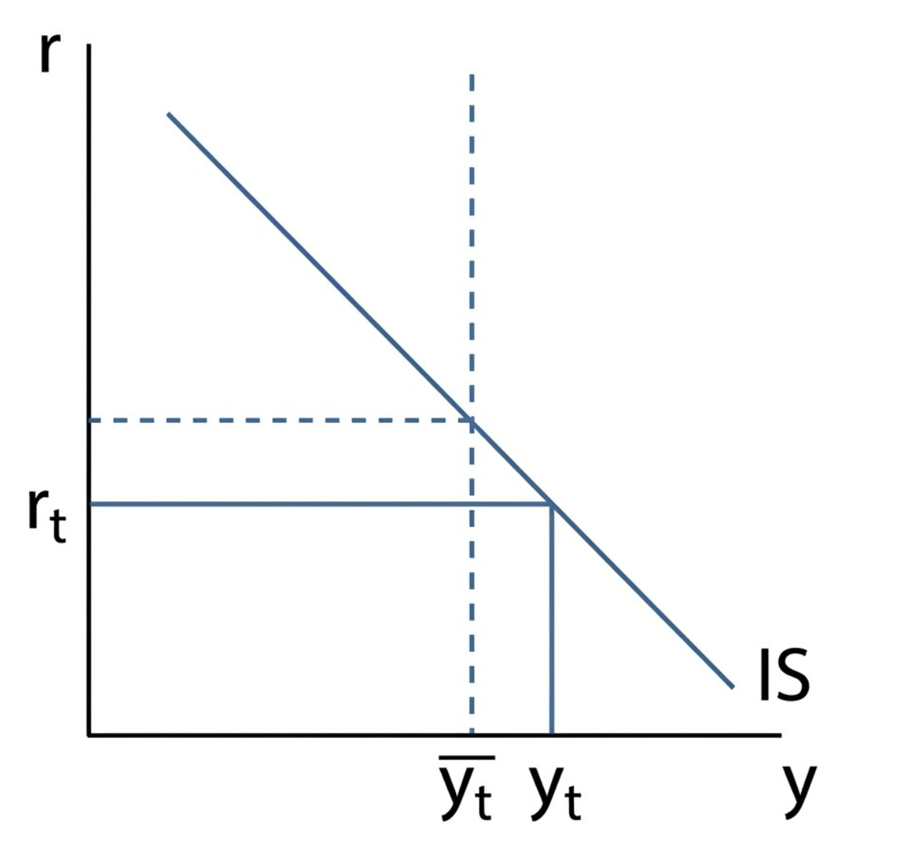
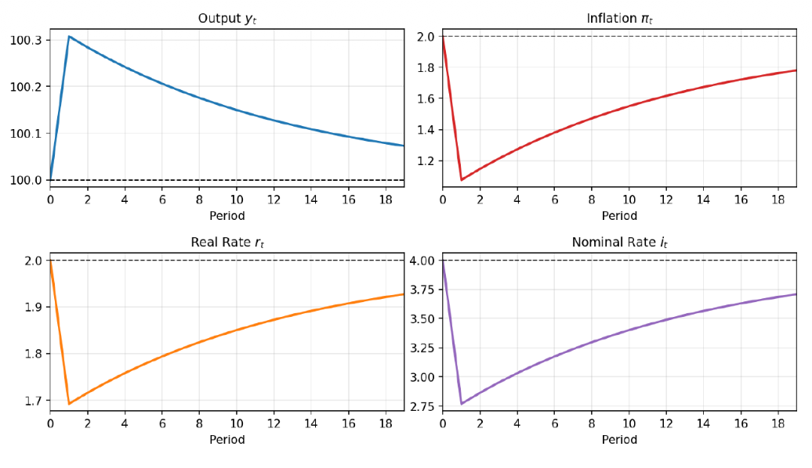
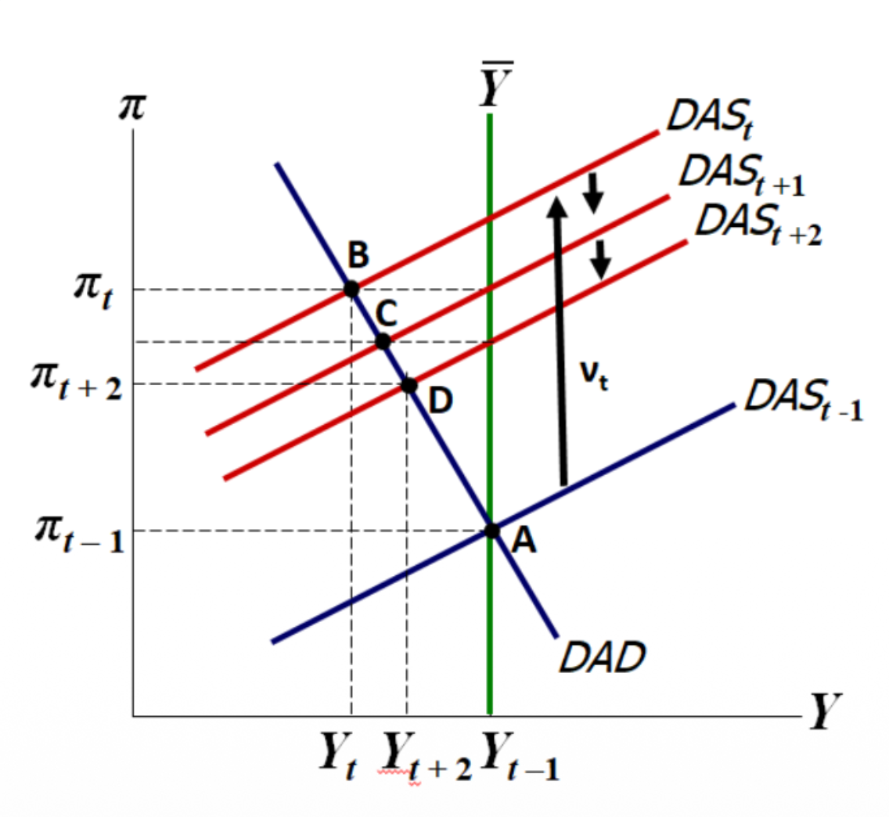
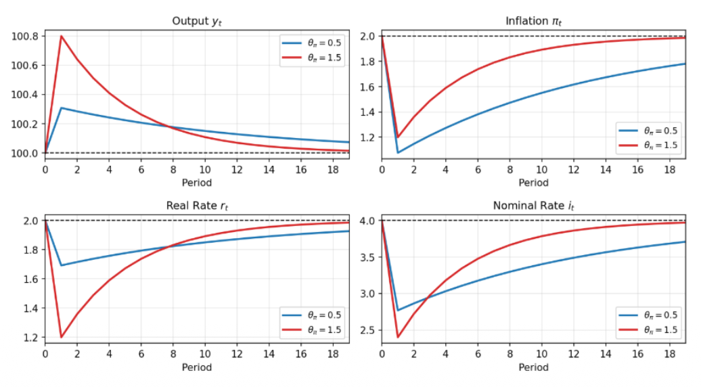

Seminar 3: Shocks' Analysis
DMM — Supply Shocks, Dynamics & Central Bank Trade-Off
Supply Shock Examples
For each of the following, determine whether the shock is a positive supply shock, a negative supply shock, or a demand shock.
- A sharp increase in global oil prices due to an embargo of the Strait of Hormuz.
- A major improvement in manufacturing technology that raises productivity.
- Increase in output due to a large fiscal stimulus.
- A substantial increase in the legally mandated minimum wage.
- A severe natural disaster that destroys factories and infrastructure.
- A global supply-chain breakdown that raises input delays and costs.
- A decline in output due to a drop in consumer and business confidence.
Show Solution
Higher oil prices increase firms' production costs → prices rise, output falls.
→ Negative supply shock ($\nu_t > 0$: DAS shifts upward)
Better technology increases productivity. This translates to an increase in potential output ($\bar{y} \uparrow$).
Because $\bar{y}$ appears in both DAD and DAS equations, both curves shift simultaneously:
- DAD shifts right ("hausse"): higher output demanded at every inflation level.
- DAS shifts downward/right ("hausse"): firms can produce more at lower inflation levels.
Government spending or tax cuts increase aggregate demand → output rises.
→ Positive demand shock ($\epsilon_t > 0$: DAD shifts right)
This policy creates a dual-channel shock:
- Firms' side: Higher wages increase labor costs $\implies$ Negative supply shock ($\nu_t > 0$, DAS shifts upward).
- Households' side: Higher minimum wages boost aggregate consumption $\implies$ Positive demand shock ($\epsilon_t > 0$, DAD shifts right/upward).
Result: Both DAD and DAS shift upward overall.
Destruction of factories and infrastructure causes a permanent decrease in potential output ($\bar{y} \downarrow$).
Because $\bar{y}$ decreases, the economy structurally shrinks (opposite of Q2):
- DAD shifts left ("baisse"): less output demanded at every inflation level.
- DAS shifts upward/left ("baisse"): lower supply capacity pushing inflation up for any given output.
Delays and higher input costs reduce firms' ability to produce efficiently → costs rise.
→ Negative supply shock ($\nu_t > 0$: DAS shifts upward)
Lower consumer and business confidence reduces consumption and investment → aggregate demand decreases.
→ Negative demand shock ($\epsilon_t < 0$: DAD shifts left)
Quick Rule
Supply shocks affect production costs (oil, wages, technology)
→ shift DAS
Demand shocks affect spending (confidence, fiscal policy) →
shift DAD
One-Period Supply Shock
Long-run equilibrium: $y = 100$, $\pi = 2$, $r = 2$, $i = 4$
Shock: $\nu_0 = -1$ (positive supply shock that lowers inflation)
- What happens to inflation as an immediate result of the shock?
- What happens to nominal interest rates as an immediate result of the change in inflation?
- What happens to expected inflation as an immediate result of the shock?
- What happens to the real interest rate? Explain relating to your previous two answers.
- Why does the central bank decrease interest rates? What is it trying to achieve?
- What happens to output as an immediate result of the shock?
- Capture the previous sequence in the IS–MPR diagram.
- What does the resulting change in output imply for inflation? (Simultaneous equations + DAD–DAS)
- Capture the immediate effect in the DAD–DAS diagram.
- Explain how inflation changes by less than the size of the shock.
Show Solution
The shock enters the Phillips curve directly. However, the result is not a simple 1 pp drop. Because the model is simultaneous:
Initially, $\nu_0 = -1$ pushes inflation down. But as we will see, the CB reacts immediately by lowering rates, which pushes output $y_0$ above potential. This positive output gap creates upward pressure that partially counteracts the shock.
Result: Inflation falls, but by less than 1 percentage point ($|\Delta\pi| < 1$).
The Taylor rule says the CB reacts to inflation below target:
The central bank reduces the nominal interest rate.
With adaptive expectations: $E_0\pi_1 = \pi_0 = 1$.
Expected inflation falls because current inflation has fallen.
From Fisher: $r_0 = i_0 - E_0\pi_1$
Both $i_0$ and $E_0\pi_1$ decrease. However, because the CB reduces nominal rates strongly (Taylor principle), the real interest rate falls:
Inflation has fallen below target. The CB lowers rates to stimulate aggregate demand and push inflation back toward the target.
Lower rates → more consumption & investment → higher output → positive output gap → inflation increases through the Phillips curve.
Because the real interest rate falls:
Output rises above potential.
The sequence in the IS–MPR space:
- Supply shock lowers inflation.
- Taylor rule → CB lowers nominal rate → movement down along the MPR curve.
- Lower real rate → movement along the IS curve toward higher output.

IS-MPR Dynamics after a Positive Supply Shock
The increase in output creates a positive output gap. From the Phillips curve:
The positive output gap pushes inflation back up, partially offsetting the initial fall caused by the supply shock.
This shows that inflation and output are determined simultaneously by the DAD and DAS equations — they cannot be solved separately.
The supply shock $\nu_0 = -1$ shifts the DAS curve downward (lower inflation at every output level).
The CB response (lower rates) moves the economy along the DAD curve toward higher output.
New equilibrium: lower inflation + higher output.

DAD-DAS Equilibrium Shift
The shock alone would reduce inflation by 1 pp. But the CB's response increases output above potential, which generates upward pressure on inflation through the Phillips curve.
These two effects partially cancel out:
Graphically: DAS shifts down, but the economy moves along DAD, so the equilibrium inflation change is smaller than the vertical shift of DAS.
Supply Shock Dynamics
Continue from Exercise 2. Assume $\nu_t = 0$ for $t \geq 1$ (the shock disappears).
- Trace out the path of $y_t$, $\pi_t$, $r_t$, and $i_t$ for periods 1, 2, and 3.
- Explain the mechanism that brings inflation back toward target.
- Why must the central bank create an expansion to stabilise inflation?
- Sketch the time paths of all four variables from period 0 through convergence to long-run equilibrium.
Show Solution
The paths for output, inflation, and interest rates following the one-period positive supply shock are illustrated below:

- Output $y_t$: Increases slightly after the shock, then gradually declines back toward potential as the economy returns to equilibrium.
- Inflation $\pi_t$: Drops sharply after the supply shock and then slowly rises back toward the target level over time.
- Real rate $r_t$: Initially falls due to the drop in inflation, then gradually increases as inflation returns toward target.
- Nominal rate $i_t$: The central bank cuts the nominal rate immediately after the shock, then slowly raises it as inflation recovers.
The mechanism that brings inflation back to target comes from the interaction between the Phillips curve and adaptive expectations ($\pi_t^e = \pi_{t-1}$).
After the shock disappears ($\nu_t = 0$), the DAS becomes: $\pi_t = \pi_{t-1} + \phi(y_t - \bar{y})$
This explains why inflation returns step by step, not immediately:
- Recursive dependency: Current inflation depends on last period's level. $\pi_1$ depends on $\pi_0$, $\pi_2$ on $\pi_1$, etc.
- Gradual adjustment: Even with an expansion ($y_t > \bar{y}$), the positive output gap only adds a small increment $\phi(y_t - \bar{y}) > 0$ to the inherited inflation each period.
- Convergence: Each period, $\pi_t - \pi_{t-1} = \phi(y_t - \bar{y})$. The CB must maintain output above potential for several periods to "lift" inflation back to the target progressively.
After the shock, inflation and expectations are low. According to the Phillips curve $\pi_t = \pi_{t-1} + \phi (y_t - \bar{y})$, if the CB kept output at potential ($y_t = \bar{y}$), inflation would stay permanently stuck below target because $\pi_t = \pi_{t-1}$.
To pull inflation up, the CB must create a positive output gap ($y_t > \bar{y}$) by cutting rates. This expansion is the only engine available in the model to force $\pi_{t+1} > \pi_t$.

Note: This graph shows the dynamics after a negative supply shock. Our exercise is the positive version.
It should be exactly the same diagram but mirrored: DAS shifts downward/right, inflation falls below target, and the CB cuts rates to move the economy back toward equilibrium.
Central Bank Trade-Off
Following a positive supply shock, the central bank faces a trade-off between inflation stability and output stability.
- Could the central bank completely offset the impact of a supply shock on inflation? If so, how? If not, why not?
- What would be the cost (in terms of output) of preventing any increase in inflation from a 1 pp supply shock? (Use $\phi = 0.25$)
- Compare a weak reaction ($\theta_\pi = 0.5$) vs. a strong reaction ($\theta_\pi = 1.5$), keeping $\theta_y = 0.5$. Capture both in DAD–DAS diagrams.
Show Solution
Yes, in theory. From the Phillips curve:
To keep inflation constant ($\pi_t = \pi_{t-1}$), we need:
The CB must create an output gap that exactly offsets the supply shock. However, this may require very large changes in output, which can be extremely costly. In practice, CBs usually allow some temporary change in inflation.
For a 1 pp positive supply shock ($\nu_t = 1$) with $\phi = 0.25$:
Output must fall 4 units below potential — a severe recession — just to prevent inflation from rising by 1 pp.
This is the sacrifice ratio: to eliminate 1 pp of inflation, the economy must give up 4 units of output.
$\text{slope} = -\frac{\alpha\theta_\pi}{1 + \alpha\theta_y}$
Weak: $\theta_\pi = 0.5$
Slope $= -\frac{0.5}{1.5} \approx -0.33$
DAD is steep. After a supply shock:
- Inflation changes more
- Output changes less
→ CB tolerates more inflation variation to protect output.
Strong: $\theta_\pi = 1.5$
Slope $= -\frac{1.5}{1.5} = -1$
DAD is flat. After a supply shock:
- Inflation changes less
- Output fluctuates more
→ CB aggressively fights inflation at the cost of output volatility.

Visualizing the Inflation-Output Volatility Trade-off
[En attente] DAD–DAS diagrams: flat DAD (weak) vs steep DAD (strong)
The Trade-Off
After a supply shock, the CB cannot stabilise both inflation and
output at the same time.
Flat DAD (Strong reaction) → less inflation variation, more output variation
Steep DAD (Weak reaction) → more inflation variation, less output variation
End of Seminar 3 — DMM Shocks' Analysis. Based on exercises by Mgr. Ing. Tomáš Pokorný (IES UK).